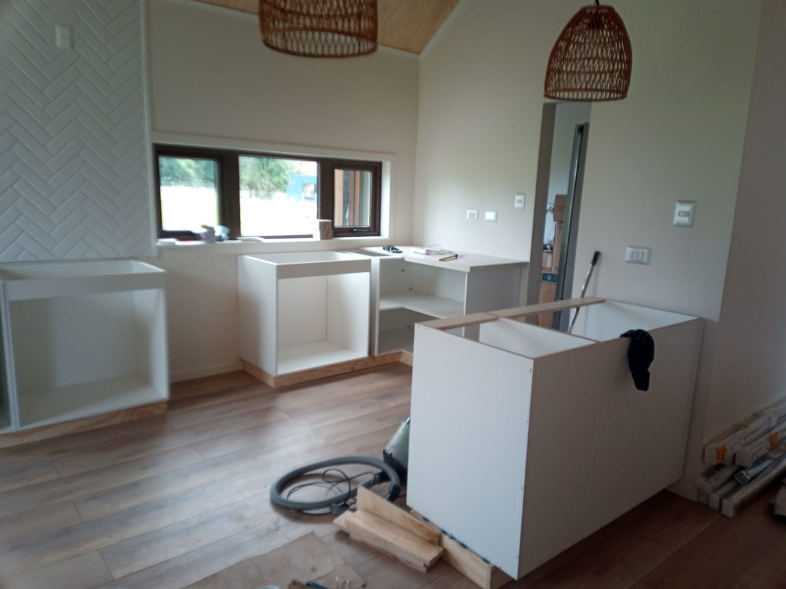
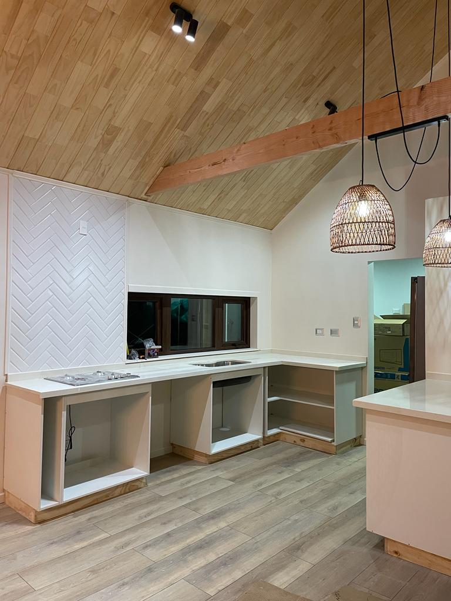
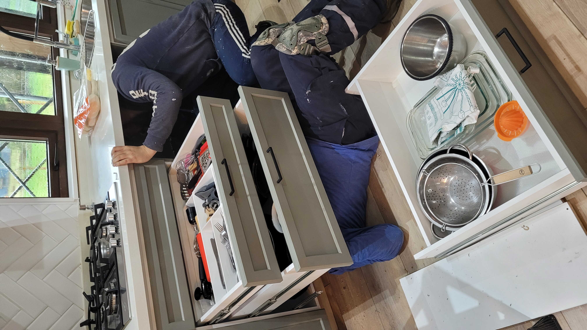
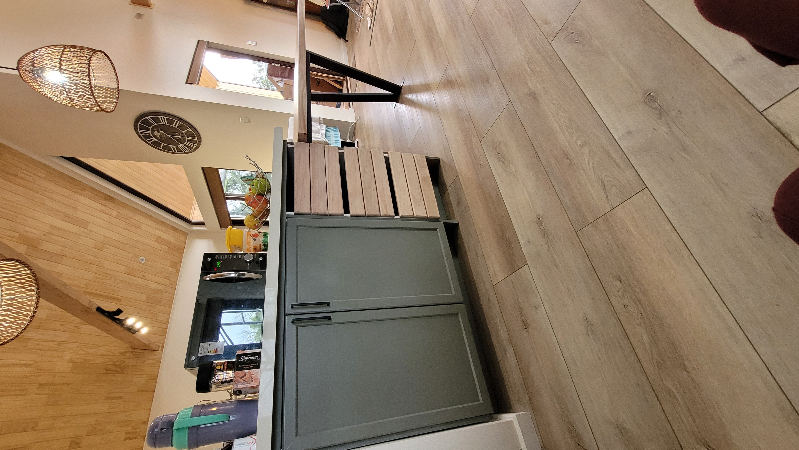

Proyecto Frutillar
Frutillar, Los Lagos
Renovación Cocina
Renovación integral en la zona de Frutillar. A continuación, presentamos el registro visual del proceso constructivo y el resultado final.




